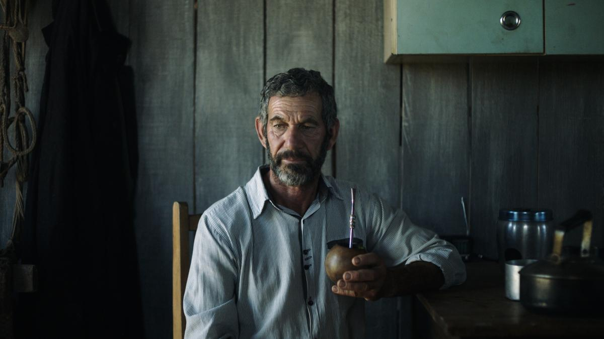

O ACIDENTE
Brasil, 2022, 95min | Sala Paulo Amorim | Drama
14h30
Direção: DE Bruno Carboni
14 anos
Joana sofre um estranho acidente enquanto anda de bicicleta: é atropelada e carregada por alguns metros sobre o capô do carro. Ela sai ilesa e decide esconder o ocorrido da sua mulher, mas logo um vídeo do acidente, filmado por um adolescente que estava no carro, viraliza na internet. Depois disso, Joana se vê obrigada a prestar queixas na polícia e acaba se envolvendo com os integrantes da família que causou o acidente. O filme conquistou os Kikitos de direção de arte, roteiro e atriz (para Carol Martins) na mostra gaúcha de longas do Festival de Cinema de Gramado. Leia mais sobre O Acidente no Portal do Cinema Gaúcho.
Mais informações

UMA NOITE EM HAIFA
Laila in Haifa - Israel/França, 2023, 100min | Sala Norberto Lubisco | Drama
14h45
Direção: DE Amos Gitai
14 anos
A boate Fattoush, em Haifa, é um dos únicos lugares em Israel onde israelenses e palestinos se reúnem para compartilhar drinks, amizades, o amor pela arte e se envolver em relacionamentos. É este o cenário onde se desenrolam as histórias de cinco mulheres, cada uma com seus objetivos e dilemas pessoais. Haifa também é a cidade natal do diretor Amos Gitai, reconhecido por mostrar o cotidiano de Israel em seus filmes. O longa competiu no Festival de Veneza em 2020.
Mais informações

PASSAGENS
Passages - França/Alemanha/Estados Unidos, 2023, 92min | Sala Eduardo Hirtz | Drama
15h00
Direção: DE Ira Sachs
18 anos
No último dia das filmagens de seu novo longa, o diretor Tomas se encanta com a jovem professora Agathe e dorme com ela. Esta é uma experiência absolutamente nova na vida do cineasta, já que ele é casado há 15 anos com Martin. À medida que os dias passam, a relação entre os três se intensifica e os sentimentos afloram num misto de paixão e narcisismo.
Mais informações

AS OITO MONTANHAS
Le Otto Montagne - Itália, 2022, 145min | Sala Paulo Amorim | Drama
16h15
Direção: DE Felix Van Groeningen e Charlotte Vandermeersch
14 anos
Pietro é um menino da cidade, enquanto Bruno é o último filho de uma aldeia esquecida nas montanhas. Entre eles nasce uma amizade improvável e, apesar de tentarem trilhar um caminho diferente dos pais, sempre acabam voltando para casa. Ao longo da vida, descobrem sobre amor, perdas e o significado da verdadeira amizade. O filme é baseado no livro homônimo de Paolo Cognetti, vencedor do Prêmio Strega de literatura, e venceu o prêmio do júri no Festival de Cannes 2022.
Mais informações
- 
CASA VAZIA
Brasil, 2021, 85min | Sala Eduardo Hirtz | Drama
17h00
Direção: DE Giovani Borba
14 anos
Raúl é um homem simples, que vive na imensidão do pampa gaúcho. Ele sempre trabalhou como peão em fazendas, mas agora está desempregado e acaba se envolvendo com ladrões de gado que atuam na escuridão da noite. Ao mesmo tempo, descobre que foi abandonado pela mulher e pelos filhos. Estreia de Borba como diretor de longas, o filme ganhou os prêmios de melhor ator, roteiro, trilha sonora, desenho de som e fotografia na mostra gaúcha do Festival de Gramado 2022.
Mais informações

LOBO E CÃO
Portugal/França, 2022, 110min | Sala Norberto Lubisco | Drama
18h45
Direção: DE Cláudia Varejão
14 anos
Ana nasceu em São Miguel, uma ilha portuguesa no meio do Oceano Atlântico que é marcada pela religião e pelas tradições. Ela é a filha do meio de três irmãos que vivem com a mãe e a avó. Ana percebeu cedo que as garotas têm tarefas distintas dos rapazes. Seu melhor amigo é Luis, um jovem queer que gosta tanto de vestidos quanto de calças e, junto com ele, Ana questiona o mundo que lhe foi prometido. Depois de documentários premiados, este é o primeiro longa de ficção da cineasta Cláudia Varejão e recebeu o prêmio de melhor filme da Mostra Jornada dos Autores, do Festival de Veneza.
Mais informações

RETRATOS FANTASMAS
Brasil, 2023, 91min | Sala Paulo Amorim | Documentário
19h15
Direção: DE Kleber Mendonça Filho
12 anos
O quinto filme do diretor é uma visão pessoal sobre memória e cotidiano. A partir de muito material de arquivo, próprio e pertencente a instituições, ele costura lembranças sobre o apartamento onde cresceu e sobre os antigos cinemas de rua de Recife, o que acaba revelando algumas verdades sobre a vida em sociedade. O documentário estreou no Festival de Cannes, em maio, e abriu o Festival de Gramado no sábado passado.
Mais informações